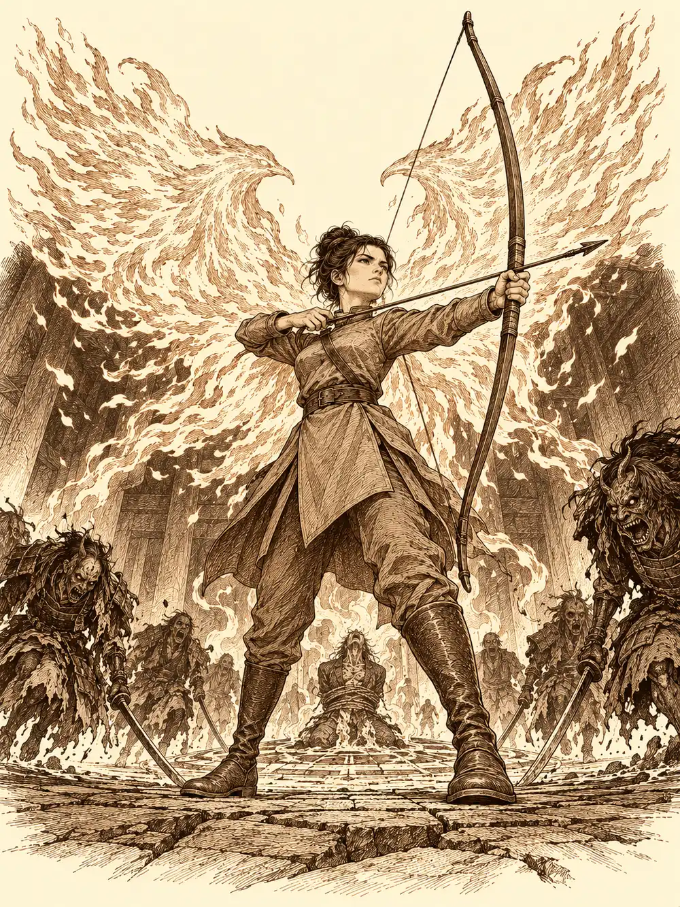

Capítulo 110
Sacrificios
Libro VII · La Reina Cuervo
A Banzo le dolía el trasero cada vez que se sentaba. La sanguijuela del lago le había dejado un mordisco que se empeñaba en enseñar a quien quisiera verlo, y ante Palayer, que acababa de llegar del frente, se levantó la falda para que admirara la herida. La paladina intentó no mirar y miró.
Días antes, Aka, Gur, Banzo y Danifae habían estado en la avanzadilla arrasada y habían encontrado un rastro. La comandante había prohibido seguirlo hasta tener gente suficiente. Ahora la tenía. Dejó a un general al mando del campamento, y Kurobane llegó por el portal para unirse. La enfermedad de las cosechas les pesaba a todos en las piernas como una mala noche.
Danifae recibió sus espadas de manos de Aka y se las colgó del cinto. Gur le preguntó para qué querían esas esferas que su hermano no quería que tuviera, y la drow volvió a desabrocharse la armadura para enseñarle la araña muerta bajo el pecho.
"Es una maldición de mi diosa. Las esferas son para quitármela".
"Mi padre y yo nos pegábamos a menudo", dijo Gur, como quien lo entiende todo.
"Mi madre casi me mataba a golpes".
"Pensé que eso solo lo hacían los orcos".
Por el camino, Danifae le preguntó a Palayer si Eilistraee la acogería en sus brazos si abandonaba a Lolth. La paladina le dijo que no podía hablar por su diosa, pero que solía ser benevolente, y que si se trataba de defenderse de Lolth, ella estaría allí.
"Pero no cuentes conmigo para tapar tus maldades".
Kurobane se acercó a Aka por detrás y le preguntó si estaba segura de llevarla. La comandante respondió, con la resignación de una madre que vigila a un niño travieso, que prefería tenerla a la vista.
"Creo que fue ella la que atacó a Calista".
"Por eso estuvo a punto de llevarse una buena tunda. Pero según ella no fue ella. Tenla vigilada".
Llegaron a la avanzadilla. Ya estaba más recogida y tenía un puesto de vigía a medio levantar. El rastro era claro al principio, tanto que hasta Gur lo veía: pisadas de humanoides que arrastraban algo pesado. Luego la lluvia lo había borrado, y en algunos tramos parecía que alguien lo había tapado a propósito. Danifae se agachó a mirarlo y se pinchó un dedo. Kurobane, tenso por tener a la drow tan cerca, no encontraba la continuación. Fue Aka quien la encontró, con los ojos de un búho que se había puesto con su magia.
"Esto no es solo de la lluvia. Aquí han intentado tapar el camino. Bípedos. Arrastrando algo".
Siguieron por las montañas del Sur, entre peñas escarpadas. La Puerta Negra quedaba detrás de las cumbres; no se veía, pero todos sabían dónde estaba. Arriba se oía un batir de alas. Gur preguntó si ya podía pegar a alguien. Danifae le dijo que primero había que jugar a seguir el rastro, y le dio unos golpecitos en la tripa para que se agachara.
Se metieron en un desfiladero, un callejón entre rocas, y al fondo vieron luz y oyeron voces. Danifae y Kurobane avanzaron sin hacer ruido, cada uno por su lado de la ladera. Gur intentó agacharse y sus pisadas retumbaron entre las paredes de piedra. La armadura y la capa de Aka también hicieron ruido.
Al final del desfiladero, la roca se cerraba en un círculo. En el suelo había pintado un símbolo que ya conocían. Delante de un altar, un sectario leía en voz alta un libro en la lengua del Abismo, y en el centro del círculo, atado, había un samurái vivo, uno de los que se habían llevado de la avanzadilla. En un rincón se amontonaban otros cuerpos de samuráis, abiertos en canal como habían visto abiertos a los tanuki. Había criaturas alrededor, y algunas llevaban todavía jirones de las armaduras del shogunato. Los miraron.
El oficiante no dejó de leer. Gur le lanzó una bola de fuego y el hombre se tambaleó y siguió recitando. Kurobane le clavó una flecha desde detrás de una roca y siguió recitando. El samurái del círculo empezó a sacudirse y a hacer ruidos que no eran de persona. Aka silbó para llamar a los que se habían quedado atrás, bendijo a los suyos, y la capa se le prendió en llamas de fénix que se abrieron a su espalda como alas.
Las criaturas cargaron. Había oni, y había otras cosas, samuráis deformados que arrastraban las katanas por el suelo y gritaban al llegar. Los sectarios los aceleraban y los cambiaban de sitio con su magia. Gur se quedó en medio de varios, sangrando por cortes que cicatrizaban mal. Danifae apareció detrás de uno y lo abrió de un solo golpe. Aka disparaba a bocajarro.
Banzo llegó corriendo. Esquivó a uno, lanzó el arpón y atravesó al oficiante. El hombre intentó decir algo y le salió sangre. Cayó. El ritual se acabó con él.
Kurobane, que disparaba desde detrás de un cactus y volvía a esconderse, mató a otro sectario y le rompió el hechizo con que ayudaba a los suyos. Banzo mandó a sus ancestros a envolver a Gur para que los golpes le llegaran más flojos y probó por primera vez el mandoble que le había regalado su amigo: le arrancó a un oni el brazo de cuajo. Una de aquellas cosas le susurró a Gur que se uniera a ella; Gur dijo que no. Palayer llegó por fin y castigó con la luz de su diosa a los samuráis deformados, que se encogían bajo ella como bajo el sol de mediodía. Kurobane intentó trepar por las rocas, resbaló y cayó, y un oni fue a por él; Danifae lo mató antes de que lo alcanzara. Aka y la drow acabaron con varios más.
Banzo agarró al último sectario por los brazos, lo levantó y lo estrelló contra la frente de Gur. La cabeza del hombre reventó. Los dos bárbaros se miraron, se rieron y celebraron con otro cabezazo, frente contra frente, hasta que a Banzo le dio vueltas el mundo.
No quedó nadie a quien preguntar nada.
Palayer se limpió la sangre de la cara y se arrodilló junto al samurái del círculo. Seguía vivo. Estaba abierto desde el pecho hasta el vientre y se ahogaba en su propia sangre. Tenía el símbolo pintado en la frente y en los hombros. La paladina le puso las manos sobre las costillas, rezó y le metió dentro toda la curación de su diosa. Las heridas empezaron a cerrarse. Eran demasiado profundas. El hombre seguía sufriendo.
Aka se acercó. Se inclinó ante él en señal de respeto, susurró unas palabras y le disparó entre las cejas. Después colocó el cuerpo arrodillado, con la cabeza inclinada, como si saludara al shogun.
"¿Alguno de vosotros tiene un espadón?".
Banzo miró a la comandante, esperó su señal y bajó la hoja.
Danifae tocó con la punta de la espada uno de los cuerpos de los samuráis deformados.
"Parecen no muertos. Muertos que se levantan".
"Pues les quitamos otra vez la cabeza", dijo Gur, y se la quitó a uno. Saltó un polvo seco. La drow se apartó: no bastaba con cortarles la cabeza. Olía fatal. Otros restos no eran cuerpos: eran solo pieles de samurái, vacías, como sacos de los que hubieran sacado lo de dentro. Banzo pensó en voz alta que quizá eran intentos fallidos del ritual. Nadie podía saberlo.
Recogieron lo que permitía identificar a los muertos, chapas, anillos, algún casco. Gur quería además llevarse el metal que sirviera para el herrero de Ukio, que no tenía con qué trabajar. Pero ninguno lo hizo a la ligera.
Gur cogió una de las espadas de los no muertos. Algo negro salió del acero y empezó a subirle por la mano, por la muñeca, por el brazo, y Aka, que lo tenía delante, reconoció aquella sensación: era la misma que la de la Puerta Negra.

Disparó. La flecha le arrancó la espada de los dedos y lo negro volvió al acero como agua que se escurre por un desagüe.
"¡Me habías dicho que podía cogerla!".
"Estabas a punto de entrar en algún plano infernal".
Había que llevarse una para estudiarla. Banzo le pidió a Palayer que estuviera atenta y la cogió. Lo negro le subió por el brazo más rápido todavía. Le ordenó en la lengua del Abismo que parara, que ahora él era su dueño, y no le hizo caso. Palayer le golpeó la muñeca con el escudo, como habían acordado. La espada cayó, pero unos hilos negros siguieron un instante pegados entre el arma y la mano del goliat, estirándose como un chicle, hasta que se soltaron. Banzo cayó de culo.
Le pidieron a Danifae que lo intentara ella, que podía coger esferas que quemaban.
"No voy a tocar eso. Antes de venir a Kuroto a buscar las esferas, me preparé para poder tocarlas. Esto es otra cosa".
No dijo cómo se había preparado.
Aka le lanzó a Kurobane una protección contra lo malvado y lo sagrado. El joven acercó la mano despacio, con los ojos encendidos como si estuviera viendo otra vez arder su pueblo, y cogió la espada. Lo negro se apartó de su piel. Aka fue renovando el conjuro durante todo el regreso, mientras los hilos negros intentaban morder a Kurobane una y otra vez, cada vez con más ganas.
En la tienda de la comandante encontraron un recipiente de cristal. Metieron la espada dentro y cerraron. Los hilos golpearon el cristal desde dentro, buscando salida, y poco a poco volvieron al acero. Era otra vez una espada normal. Aka la metió en un baúl y cerró el baúl con un candado.
"Solo yo tengo la llave".
Pensaba pedir a algún cazador entendido que la estudiara. Hacía mucho que no veía a Maroxi.
Palayer había envuelto en un trapo el libro del altar. Era distinto del que guardaban en la base, y se lo entregó a Kurobane para que llegara a los eruditos. El joven ya había raspado el símbolo del suelo y había dejado en su lugar la marca de su orden, el círculo cortado por una línea, para que supieran quién les estropeaba los planes.
Danifae le dio las espadas a Aka sin que se las pidiera y se ofreció para seguir otros rastros. A Gur le tocó el collar de campeón para despedirse. A Banzo le dijo que repetirían el baño cuando quisiera. A Palayer, que esperaba que Eilistraee la ayudara. Después cruzó el portal. Gur cargó el saco de metales que sí se podían tocar y Banzo se fue con él.
Antes de llegar al portal, Banzo cambió de idea y arrastró a Gur hasta un rincón del campamento.
"Vamos a echarle una mano a Sun. Corre, ven".
Allí estaba el monje solitario, comiendo. Banzo le dijo a Gur que lo distrajera, y Gur, sin entender nada, le contó al monje que aquel orco le debía dinero. Banzo levantó el puño para dejarlo sin sentido. El viejo se giró antes, le dio un golpecito con el bastón y el goliat dio dos vueltas en el aire y aterrizó de espaldas.
"Hay que llevárnoslo", dijo Banzo desde el suelo.
"¿Tú quién eres?", preguntó Gur.
"Soy Sanzan. Un monje, un viajero".
"Qué nombre más raro".
Gur quiso saber por qué tenía que venir con ellos. Banzo le explicó que era amigo de Sun, que Sun no podía venir porque se lo tenían prohibido, que había que reconciliarlos. El monje le dio a Gur un toquecito en la cabeza y el semiorco se quedó con los ojos en blanco.
"A Sun le mandé hacer unas pruebas. Hasta que no las haga y sepa cuál es su verdadero camino, seguirá así. Lo de que no pueda venir es lo que le toca a él resolver". Miró a Banzo. "Tú eres su amigo".
"Sí".
"Los amigos están para ayudar. Ayúdale a encontrar su camino".
A Gur se le volvieron a colocar los ojos.
"Uy, perdón. ¿Qué estábamos diciendo?".
Gelbreak cruzó la base de Ukio a toda prisa y abrió la puerta de un golpe. Calista estaba sentada con los papeles de Danifae delante y lo miró con horror. El drow le dijo que se iban de inmediato. Ella no protestó. Guardó los documentos y lo siguió, todavía pálida.
Después, las campanas de Sho tocaron a muerto con un tañido grave y largo que hizo callar a los perros. Había muerto el shogun.
Guxi corrió a palacio y un samurái le cerró el paso: ese día no entraba nadie, ni siquiera la alta nobleza. Jin lo encontró deshecho en la escalinata. Ikari, despertado por las campanas, había salido a buscar caras conocidas, y entre los dos sostuvieron al artífice, que apenas se tenía en pie. Calista intentó hacerlo reaccionar y acabó dándole una bofetada. Guxi se culpaba por no haber investigado más deprisa. Golpeó el suelo con el puño hasta abrirse los nudillos. Banzo le aseguró que no era culpa suya. Nadie sabía todavía de qué había muerto. Jin se lo llevó en brazos a la cama y se quedó fuera de su puerta esperando a Shizuka. Ikari le ofreció sake. Jin lo aceptó, y le dijo que Guxi necesitaba silencio.
Calista pidió solemnidad. Propuso que los cazadores ofrecieran flores. Banzo recordó que en su manada se rendía tributo con una orca disecada y aceptó cambiarla por un ramo. Buscaron a Katari, que podría conseguirles flores en un mercado imposible de caro, y por el camino Banzo le preguntó a Gelbreak si él también tenía una araña muerta tatuada en la tripa, como la de su hermana, que decía necesitar unas esferas para quitársela. El drow se tensó, le pidió que se la describiera y después lo convirtió todo en una broma sobre el mal gusto de Danifae. Calista no se rio.
En el campamento del Sur encontraron a Kurobane herido. Gelbreak lo curó y le dijo al oído algo que no era amable. Kurobane les contó la expedición, los samuráis convertidos, la espada en la tienda de Aka. Gelbreak le exigió el libro de los sectarios y el joven acabó dándoselo. No encontraron a Katari ni a Aka. Kurobane se ofreció a llevar a Calista a una floristería de la capital, y ella le recordó que el luto también formaba parte de los deberes de una emisaria.
Banzo los alcanzó con unos cuencos de sopa de pantano. Le contó a Gelbreak lo que había visto: soldados convertidos en no muertos que olían a podrido, cuerpos reducidos a la piel, espadas que lo habían helado por dentro como la Puerta Negra. Se preguntó en voz alta, sin ninguna certeza, si serían puertas al Abismo. En la tienda, Calista escogió el blanco, aunque el color del shogun fuera el rojo, y encargó una corona de lirios y crisantemos blancos. Kurobane propuso un lazo rojo, pureza y amor. La florista lo ató.
Mientras tanto, un águila real se posó a las puertas del palacio y se convirtió en Katari. Preguntó a un samurái por dónde pasaría el cortejo y recorrió el camino haciendo brotar flores de colores vivos. Al final levantó masas de agua que caían en cascadas, para la pureza, rodeadas de muros de piedra con lianas, y llenó las plantas de bayas buenas, para que la vida siguiera. Luego volvió a ser águila y se perdió en el cielo.
Kurobane se vistió de gala en un rincón apartado de la base, con unos guantes a juego. Se preguntaba, sin decírselo a nadie, cómo habría muerto alguien, y esperaba que hubiera sido de viejo.
Banzo cruzó el portal de Ukio buscando a Sun. No lo encontró. Le dejó un dibujo para que entendiera que el jefe había muerto, y los tanuki le trajeron un viejo hábito de monje oscuro que le venía bien de talla. Se lo puso y volvió a Sho.